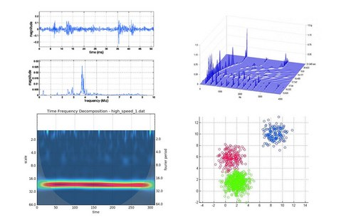
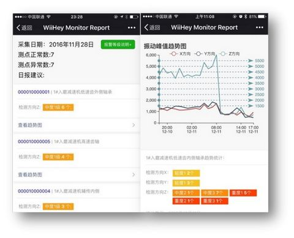

水泥厂减速机振动预警
概述
水泥行业的减速机具有大型、低速、重载等特点，像球磨机、辊压机、输送机、破碎机等中，都可以看到减速机的身影。这些设备工作环境恶劣，承受严重的冲击负荷，而且物料的相关物理特性、生产工艺等对设备工况的影响较大，这都让设备的故障率上升。
对于减速机的日常检查，虽然业界规定了方法和标准，但在实际应用中，检查往往不能得到有效执行，更多的是基于工作人员自身的经验，所以，减速机状态好坏的评判，存在着很大的主观性。
传统的在线监测系统在一定程度上提高了厂家的设备维护水平，但依然需要借助人工进行数据分析和评定，自动化不高，因此，厂家事后维修的事件仍屡见不鲜，而且具有较高的实施成本和使用门槛。
新型监测系统
WiiHey推出了新型的减速机监测系统，它利用更先进的传感器、物联网和人工智能等技术，使得监测结果更加精准的同时，还减少了实施成本和人工参与，进一步提高了厂家的设备维护自动化水平。
WiiHey通过安装在减速机关键位置上的传感器和现场物联网设备，逐步完成数据的采集、传输、分析、存储等操作，达到对减速机运行状态的实时、在线监测，能够自动识别异常状态，及时报警和记录，并在报警时提供准确维修建议，帮助厂家解决设备维护难题。
监测和诊断原理
机械设备在运行中总是会产生振动和噪声，当运行部件中存在故障隐患时，往往会使振动、噪声、温度等物理参数发生某种变化，这种变化仅仅靠人的感官（即使在有自觉性的情况下）是很难发现的，一旦发现，往往是在比较严重和危险的阶段。
通过振动监测，可以发现设备的早期异常，此时进行及时干预和维护，可以花费很小的代价，将故障抑制在萌芽之中，避免突发性的停机罢工事件。
Wiihey的数据中心采用了多种算法进行信号分析，包括基于振动信号的时域分析、频域分析、小波变化、大数据统计分析等：
从时域的角度对减速机进行运行状态的趋势监测，从频谱的角度对减速机进行故障特征信息的提取，从小波变换的角度对含噪声振动信号进行消噪以及对信号进行多分辨率的分析，从大数据的角度对同类设备的故障进行基于统计学的模式识别。
产品主要功能
- 监测设备运行状态，掌控设备健康状况；
- 分析设备运行趋势，预测设备潜在故障；
- 振动异常预警，避免突发性停机事故；
- 诊断故障位置，提供维护指导建议；
- 输出设备管理、运行统计报表；
- 支持多种数据分析算法；
- 支持多种客户端操作界面；
- 建立科学的设备预测性维护体系和流程；
系统拓扑结构

界面一览
频谱、小波变换、分类算法
手机微信端报表、预警消息推送
PC端浏览器界面

总结
结合实际应用证明，WiiHey的振动预警系统，可以尽早的发现故障征兆，提供准确的维护建议，能够很好的进行减速机的状态监测和故障诊断。
| 参数 | 内容 |
|---|---|
| 监测对象 | 低速重载减速机组 |
| 评估指标 | 振动、冲击能量、健康度 |
| 无线通信 | 2.4GHz/BLE/WiFi/4G等组合 |
| 续航时间 | 18个月@每分钟上报数据/5年@每2小时上报数据 |
| 工作温度 | -20°C-+90°C |
| 安装方式 | 螺栓固定、粘贴固定 |
| 温度测量 | ± 0.5 °C, 15 to +60 °C |
| 湿度测量 | ± 4.5% rH, 20 to +80% rH |
| 加速度测量 | ±16g重力加速度 |
| 加速度计类型 | 三轴MEMS |
| 分析依据 | 时域、频域、小波变换、大数据统计分析 |
| 报警阈值 | 自适应 |
| 消息推送 | 微信（首选） |
| 专家远程诊断 | 支持 |
江西省某大型水泥厂的刘总说：“WiiHey的产品，一方面解决了以前人力巡检不能及时发现设备异常的问题，另一方面，减少了人员前往高空巡检的安全隐患，让企业受益匪浅。”
高空巡检人员
江西省某设备维修员说：“以前我需要按照巡检路线图，每天花3个小时巡检80-100个点，有了WiiHey的无人巡检，可以让我焦距在真正有问题的设备上，着重改善它们的性能。”
巡检路线图